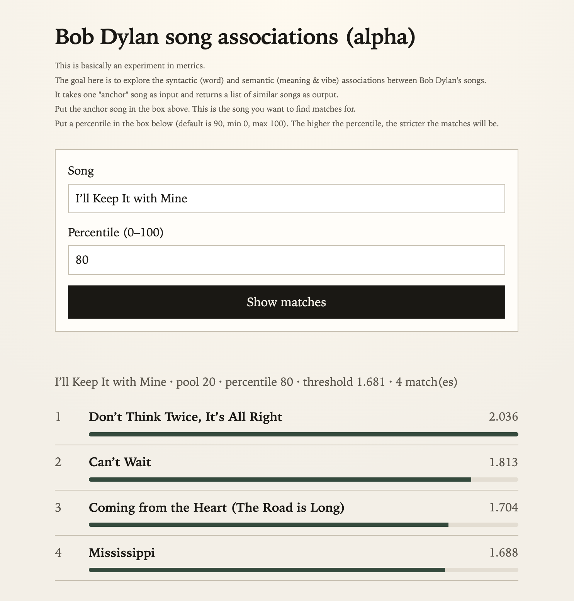

02
AI / EDUCATION
Bob Dylan Lyrics Analysis
Trying to capture semantic similarity between Dylan songs using bag-of-words, TF-IDF, and embedding analyses. For more details, see my article "Tangible Enough (2/2)".
nlp
